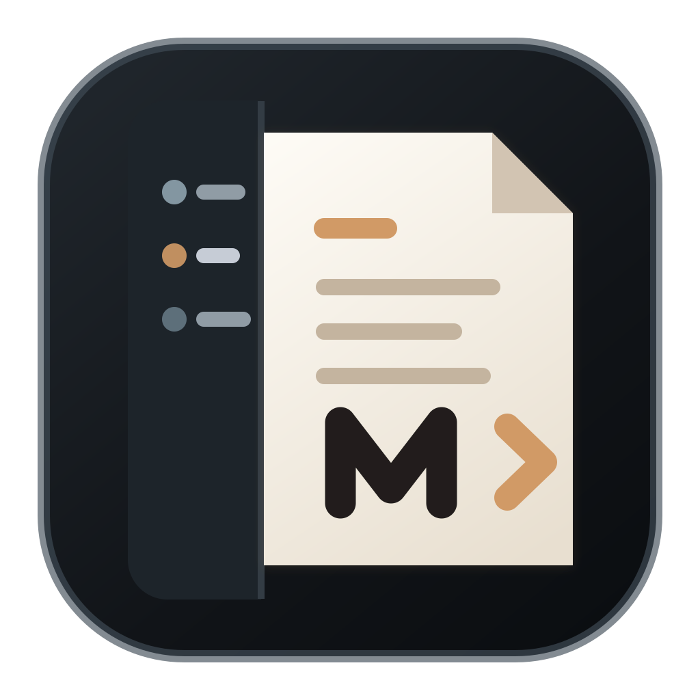
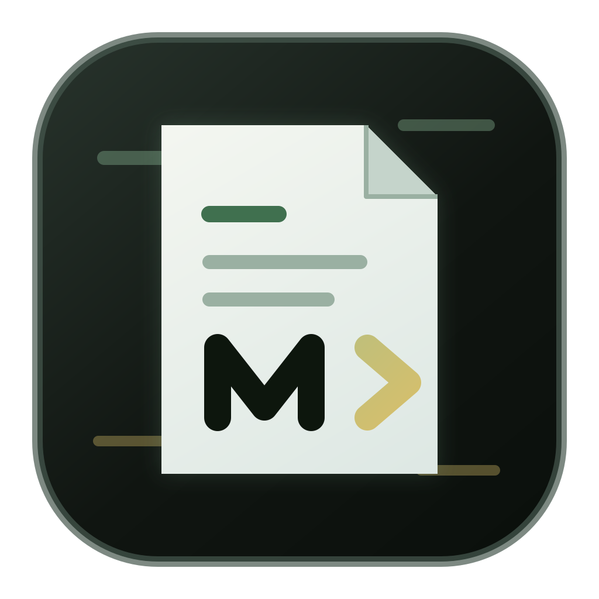

01 Manuscript Fold
Recommended暖纸底 + 左侧文件栏 + 折角文稿。最贴近当前产品 UI，也最不像通用 Markdown 图标。

128
96
64
44
32
Use When
- 希望图标和默认浅色主题强绑定
- 偏个人写作、知识整理、文档编辑
- 发布页需要温暖而非冷科技感
MDE App Icon · Design Exploration
假设：MDE 的识别资产来自真实产品，而不是外部品牌规范。核心线索是暖纸编辑器、左侧资源管理器、本地文件、Markdown 语义和克制的工具感。 这页先给 3 个可落地母版，每个都检查 128/96/64/44/32 像素可读性。
暖纸底 + 左侧文件栏 + 折角文稿。最贴近当前产品 UI，也最不像通用 Markdown 图标。

深色底让 Dock 中更突出。把 VS Code-like explorer 和 Markdown editor 做成清晰的双栏结构。

矿物绿底 + 命令箭头。保留文稿核心，同时给搜索、AI action、快捷操作留一点未来感。

Design Call
01 的胜点是“认得出 MDE 当前 UI”：暖纸、文件栏、文稿编辑器都来自产品真实界面。缺点是浅色 Dock 中对比稍弱， 所以落地时可以把外框、文稿阴影和 M glyph 加深一点，或者生成 macOS dark alternate 供营销图使用。
docs/superpowers/prototypes/app-icon-assets/mde-icon-manuscript.svgdocs/superpowers/prototypes/app-icon-design-concepts.htmlpackage.json 的 Electron Builder icon 配置。